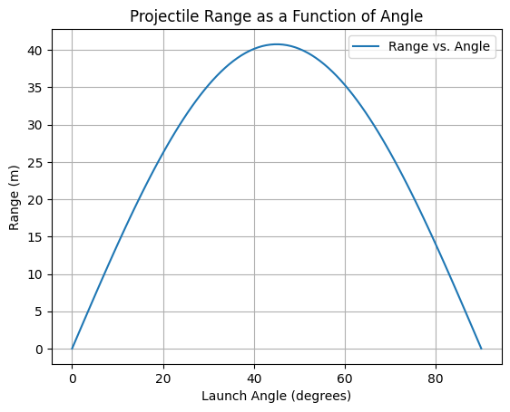
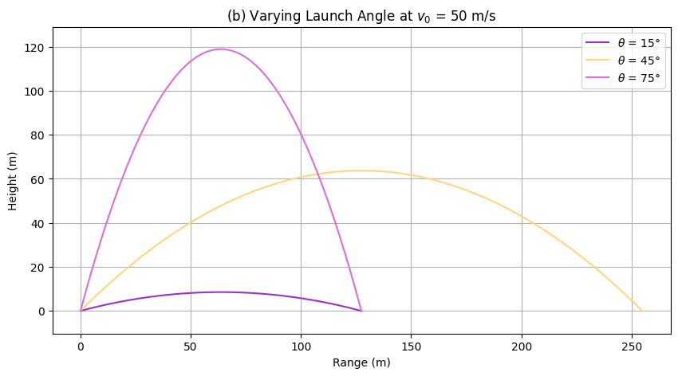
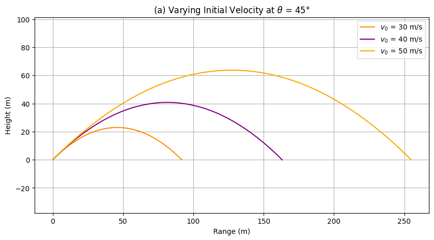
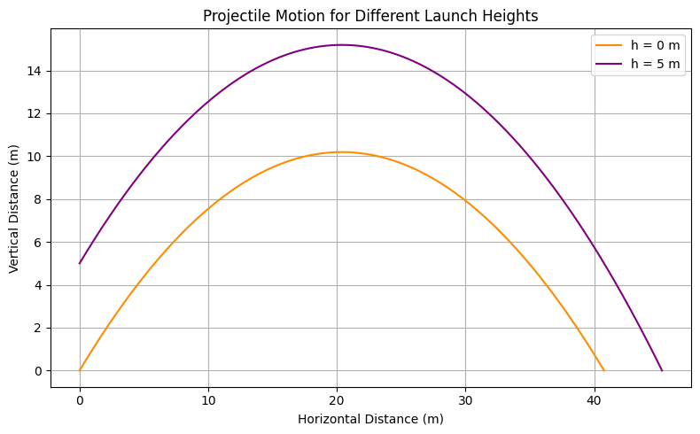

Problem 1:
Investigating the Range as a Function of Launch Angle
Motivation
Projectile motion is a foundational concept in physics, offering insight into how objects move under the influence of gravity. In this project, we aim to explore how the range of a projectile depends on the launch angle, both:
- Analytically (using kinematic and dynamic equations),
- Numerically (using Python simulations with and without air resistance).
We'll begin with the ideal case (no air resistance), and progressively consider more realistic scenarios involving linear air drag, wind, and computational modeling.
1. Equations of Motion
Without Air Resistance
We apply Newton’s Second Law:
This leads to constant acceleration in the vertical direction and no horizontal acceleration.
2. With Air Resistance (Linear Drag)
Air drag is modeled as a force proportional to the velocity:
Horizontal Direction

Vertical Direction
These are first-order differential equations, typically solved using numerical methods such as Euler or Runge-Kutta.
3. Kinematic Equations (No Drag)
For a projectile launched from height \(h\), initial speed \(v_0\), and angle \(\theta\):
-
Horizontal position: $$ x(t) = v_0 \cos(\theta) \cdot t $$
-
Vertical position: $$ y(t) = h + v_0 \sin(\theta) \cdot t - \frac{1}{2}gt^2 $$
-
Horizontal velocity: $$ v_x = v_0 \cos(\theta) $$
-
Vertical velocity: $$ v_y(t) = v_0 \sin(\theta) - g t $$
-
Speed at time \(t\): $$ v(t) = \sqrt{v_x^2 + v_y(t)^2} $$
Where: - \(g = 9.81 \, \text{m/s}^2\) (acceleration due to gravity), - \(t\) is time in seconds, - \(x(t)\) and \(y(t)\) are the positions at time \(t\).
4. Time of Flight
To find how long the projectile is in the air, solve for when it hits the ground:
This is a quadratic equation in \(t\):
Solving:
Note: Discard the negative root (time cannot be negative).
5. Range of the Projectile
The range is the horizontal distance when \(y = 0\):
If \(h = 0\):
Insight
Maximum range occurs when:
|  |  |
|---|---|

6. Example Calculations
Example 1: Maximum Range at \(h = 0\)
If \(v_0 = 20 \, \text{m/s}\) and \(\theta = 45^\circ\):
Example 2: Including Launch Height (\(h = 5 \, \text{m}\))
Use the full range equation with:
- \(v_0 = 20 \, \text{m/s}\),
- \(\theta = 45^\circ\),
- \(h = 5 \, \text{m}\)
Numerical solution: